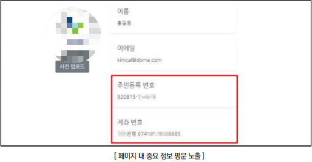
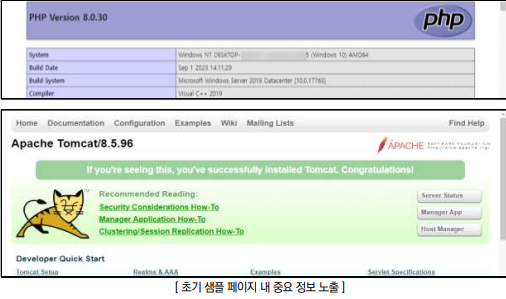
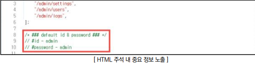
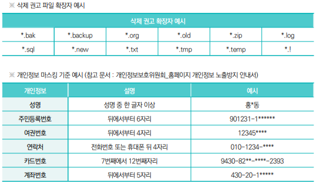

점검 목적
- 내 중요 정보(개인정보, 금융 정보 등) 및 불필요한 정보(주석 내 디버깅 정보, 초기
샘플페이지, 백업 파일 등)의 노출 여부 점검
여기서 말하는 중요 정보란?
- [ 고유식별정보(주민등록번호), 비밀번호(로그인 비밀번호, 계좌 비밀번호, 공인인증서
비밀번호 등), 신용정보(보안카드번호, 카드번호 등) 등 ]
판단 기준
- 양호 : 중요 정보가 마스킹 처리되어 있으며, 서비스 운영 및 서버 사이드의 구조를 파악할 수 있는
불필요한 정보가 노출되지 않는 경우
- 취약 : 중요 정보가 평문으로 노출되거나, 서비스 운영 및 서버 사이드의 구조를 파악할 수 있는 과도한
정보가 노출되는 경우
대책 및 조치 방법
- 소스코드 및 취약점 점검 필요
- 중요 정보를 마스킹 처리하고, 샘플 페이지나 불필요한 정보를 제공하는 요소를 삭제하여 과도한 정보 노출을 최소화함으로써
민감 정보와 내부 시스템 구조의 노출을 방지함
마스킹이란?
- 개인정보나 기밀 데이터를 보호하기 위해 데이터의 일부를 식별할 수 없는 형태로 변환하는 기술입니다.
Ex)
예시:
카드 번호
1234-5678-****-****
나 이름
홍*동
과 같이 민감한 부분을 별표(*) 등으로 대체하는 방식입니다.
사용하는 목적 :
- 데이터의 형식을 유지하면서도 실제 값은 노출되지 않도록 하여 정보 유출 사고를 방지하기 위함
점검 방법 (서버별)
Apache
1. 웹 애플리케이션 내 중요 정보(개인정보, 금융정보 등)의 평문 노출 여부 점검

2. 서버나 WAS의 초기 샘플 페이지, 백업파일 등 불필요한 정보의 노출 유무 점검

3. HTML 소스코드 내 중요 정보가 코드 및 주석을 통한 노출 여부 점검

조치 방법
1. robots.txt, web.config, nginx.conf 파일 작성을 통해 검색 차단할 디렉터리, 확장자, 페이지 등을 지정할 수
있으며 HTML 태그 내에 META 태그를 추가하여 검색엔진의 인덱싱을 차단함
2. 웹 디렉터리 내 삭제해야 할 파일 태그 확장자에 포함된 백업 파일을 모두 삭제하고, *.txt 확장자와 같이 작업
중 생성된 일반 텍스트 파일이나 이미지 파일 등 불필요한 파일에 대하여 제거
3. 웹 서버 설정 후 초기 페이지와 초기 디렉터리 및 배너를 삭제하여 Banner Grab에 의한 시스템 정보 유출을
차단함
4. 아래 개인정보 마스킹 기준 예시를 참고하여 개인정보 항목의 일부를 마스킹해야 함
5. 개발 중 작성된 주석 문자, 디버그 정보, 시스템 구조 관련 정보 등이 외부에 노출되지 않게 제거
